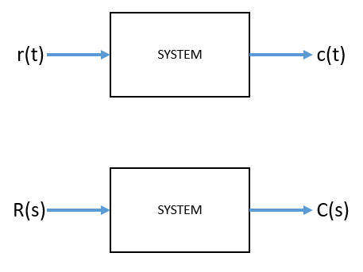
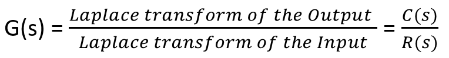
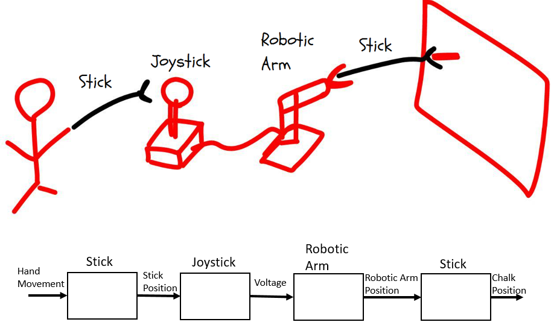
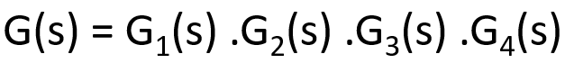

HOME BLOG EBOOKS ABOUT CONTACT SHOP
The Transfer function is nothing but a mathematical indication of the relationship existing between the input and the output of a Control system. In other words, the transfer function is a mathematical expression that tells what a system is doing to the input. In designing a system, first the system parameters are designed and their values are chosen as per requirement. Then the performance of the system is observed for a sample input. We can say that the system parameters are acting on the input to produce an output. Or in other words, the input gets transferred into output once applied to the system. This is the concept of Transfer function.
Mathematically, the Transfer function is defined as the ratio of Laplace transform of the output of the system to the Laplace transform of the input of the system, assuming zero initial conditions.

The Transfer function of the system G(s) is given by,

Consider this ridiculous example. Suppose you are asked to write your name on a black board, using a contraption, as shown below.

Disregarding its complexity, this is nothing but another Control system with an input and an output. The difference here is that this Control system is itself made up of 4 other Control systems. So to understand the effect of the Control system as a whole, we need to characterize the behavior of each part separately and combine them. All we have to do is to find the transfer function of each part and combine them in some manner. Since the output of one part is the input to the next part, the Transfer function of the system as a whole is simply the product of individual Transfer functions.

The Transfer function of a system can expressed as the ratio of two functions of ‘s’, G(s) = P(s)/Q(s). In most cases, it is more convenient to represent the rational transfer function in the factorized form.
DC Gain: The term K in the transfer function (in factorized form) is called the Gain factor or the DC gain. It is simply the value of the transfer function at zero frequency i.e. s=0.
Poles & Zeros: The values of ‘s’ for which the magnitude of the transfer function becomes infinity are called the Poles of the system. These are simply the roots of the denominator of the transfer function.
And the values of ‘s’ for which the magnitude of the transfer function becomes zero are called the Zeros of the system. Poles and Zeros may be real or complex-conjugates or combination of both.
(ex) G(s) = (s+2)/s(s+5)
For this transfer function, there are two poles at s= 0 and s= -5 and a zero at s= -2. These values can be plotted on the complex s-plane, using an X for poles and O for zeros.
Order of the System: The order of the system is the highest power of ‘s’ present in the denominator polynomial of the transfer function. The system in our example is a second order system.